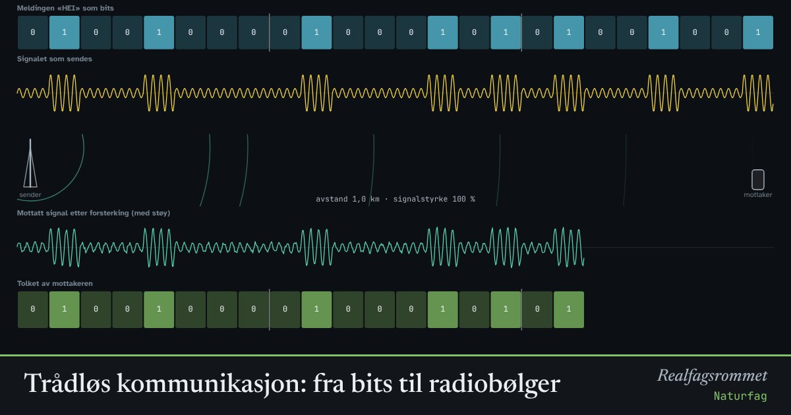

Trådløs kommunikasjon: fra bits til radiobølger
Mobilen, wifi og bluetooth sender informasjon som radiobølger. Meldingen gjøres om til bits, og bitene endrer en bærebølge. Mottakeren må tolke et svakt signal med støy.
Start animasjonen
Formler
Om animasjonen
Datamaskiner lagrer alt som bits, 0 og 1. Hver bokstav er et tall som skrives med åtte bits. «H» er 72, som er 01001000 i totallsystemet.
Senderen lager en bærebølge og endrer den etter bitene. Ved amplitudemodulasjon blir bølgen sterk for 1 og svak for 0. Ved frekvensmodulasjon svinger den raskere for 1 enn for 0. Antennen sender bølgen ut som en elektromagnetisk bølge.
Signalet blir svakere med avstanden, omtrent som . Mottakeren forsterker det, men da forsterkes også støyen. Blir signal–støy-forholdet for dårlig, tolkes noen bits feil.
Frekvensmodulasjon tåler støy bedre, fordi støyen endrer styrken mer enn hvor fort bølgen svinger. Moderne mobilnett og wifi bruker smartere varianter og feilrettende koder. Wifi bruker frekvenser rundt 2,4 og 5 GHz.
Prøv dette
- Hvor mange bits trengs for meldingen? Hvorfor?
- Øk avstanden til det blir bitfeil. Hvorfor kommer feilene først når avstanden blir stor?
- Sammenlign amplitude- og frekvensmodulasjon med mye støy. Hvilken er mest robust?
- Regn ut bølgelengden til wifi på 2,4 GHz. Lysfarten er 3·10⁸ m/s.
Kompetansemål
- Naturfag: Trådløs kommunikasjon